Blocking advertisements on your mobile phone
Introduction
Ads are everywhere on modern day devices, especially on your mobile phone but did you know that you can easily block ads on your mobile phone and other internet enabled devices such as tablets and smart TVs for free.
You can use an alternative DNS server to block ads, this works by preventing your device from connecting to the malicious servers that deliver you annoying ads on your device.
Ads are annoying, they put you at risk from malware, scams, and can even alter your political views, therefore you should block them from your device.
NextDNS
The NextDNS, DNS provider is my preferred DNS provider as it is free to use if you have less than 300,000 requests a month, if you exceed this limit the service will disable automatically and automatically resume at the start of the next month, therefore you don't need to pay anything to use this service.
The NextDNS service is really easy to setup and there is also a paid plan that will give you an unlimited number of requests.
NextDNS official websiteSetting up NextDNS
It is really easy to setup the NextDNS service, you just need to make a free account and change a few settings to ensure that the ads will be blocked on your device.

You need to navigate to the NextDNS homepage, then you need to click on the "try it now" button.
NextDNS official website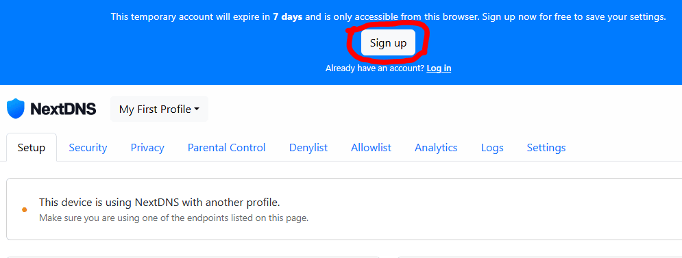
You should now see a blue banner at the top of your screen, you need to click on the "sign up" button to start the account creation process.
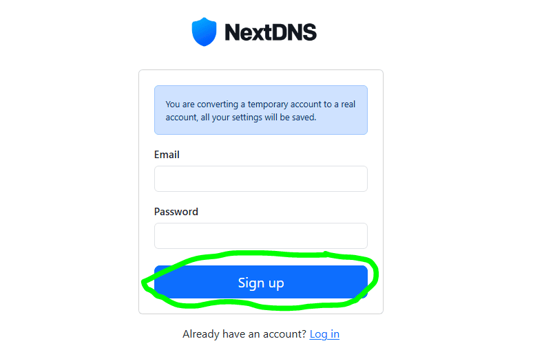You will now be asked to enter your email address and your password, you need to make sure that the password you enter is secure, then click "Sign up" to create your NextDNS account.
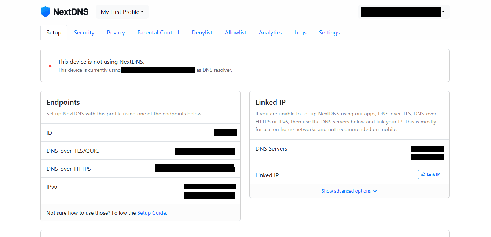You should now see a screen like this, you have now successfully setup your NextDNS account. You now need to configure your NextDNS account.
Configuring NextDNS
NextDNS does not come with the optimal settings by default, therefore you will need to configure NextDNS so that it works well for your particular needs.
The first thing that you need to do is click on the settings button, this will allow you to configure the NextDNS service.

On the settings page you will see an option to "Enable Logs", you want to deactivate this so that it looks like the image above, this prevents NextDNS from keeping a record of your internet browsing activities.
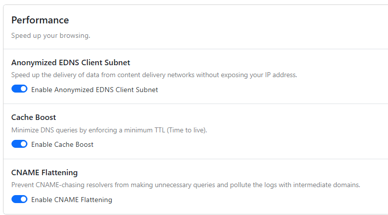For the performance section you need to make sure that "Anonymized EDNS Client Subnet", "Cache Boost", and "CNAME Flattening" are all enabled.
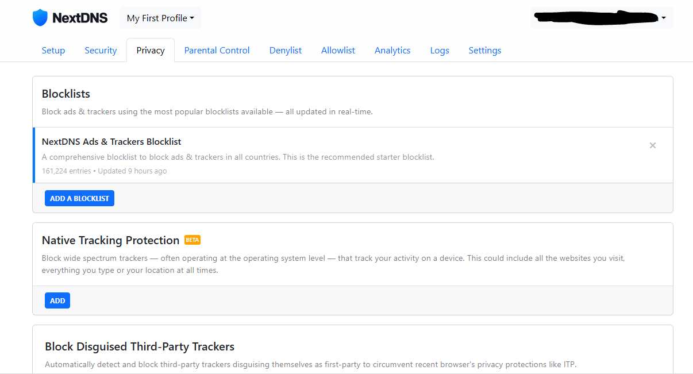The next thing you need to do is navigate to the privacy page, on the privacy page you will find a button that says, "ADD A BLOCKLIST", you need to click on it and add the following blocklists:
- NextDNS Ads & Trackers Blocklist
- AdGuard DNS filter
- OISD
- AdGuard Mobile Ads filter
- EasyList
- HaGeZi - Multi PRO++
- hBlock
After you have added the blocklists, you need to scroll down to the bottom of the privacy page and enable "Block Disguised Third-Party Trackers" and "Allow Affiliate & Tracking Links".
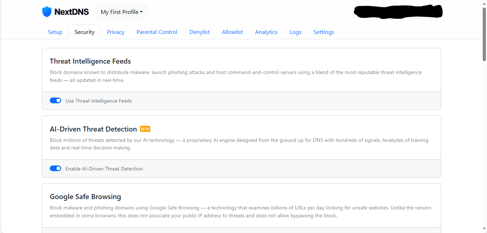The last thing that you need to do to configure your NextDNS account is configuring the security settings, you need to navigate to the security page and configure the following settings listed below.
Settings to ENABLE:
- Use Threat Intelligence Feeds
- Enable AI-Driven Threat Detection
- Enable Google Safe Browsing
- Enable Cryptojacking Protection
- Enable Homograph Attacks Protection
- Enable DGA Protection
- Block Child Sexual Abuse Material
Settings to DISABLE:
- Enable DNS Rebinding Protection
- Enable Typosquatting Protection
- Block Newly Registered Domains (NRDs)
- Block Dynamic DNS Hostnames
- Block Parked Domains
You have now successfully configured your NextDNS account, you can now proceed to install NextDNS onto your devices.
Installing NextDNS on your device

You can find guides on installing NextDNS on your device near the bottom of the setup page.
There are many different ways of installing NextDNS on your device, the methods can vary from device to device, therefore you will need to follow the guide that is appropriate for the device that you wish to install the NextDNS service onto.
Installing NextDNS on an Android device
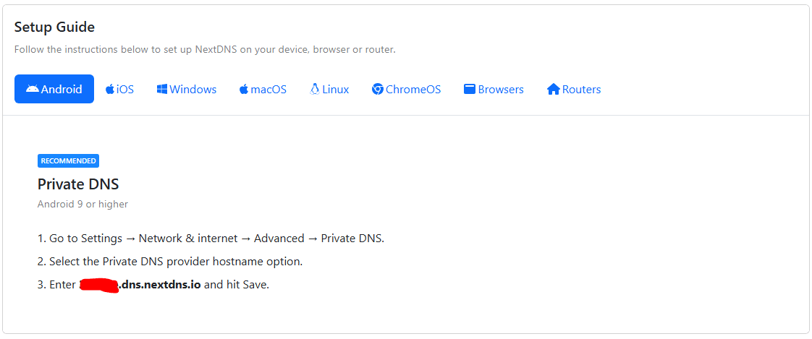The first thing that you need to do is find your unique NextDNS private address, you can find this by viewing the "Android" setup guide in your NextDNS portal.
Your NextDNS private address should end in ".dns.nextdns.io"
You can install NextDNS on any Android device running Android 9 or later, this includes devices such as Android/ Google TV based smart TVs, Android tablets, and Android phones, the menus might look slightly different across different versions and devices, but the principles of this guide will still apply regardless.
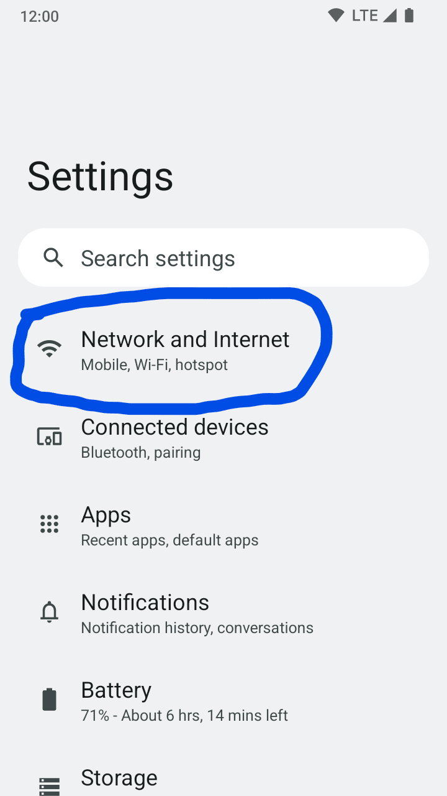You need to open your system settings and navigate to the "Network and Internet" section.
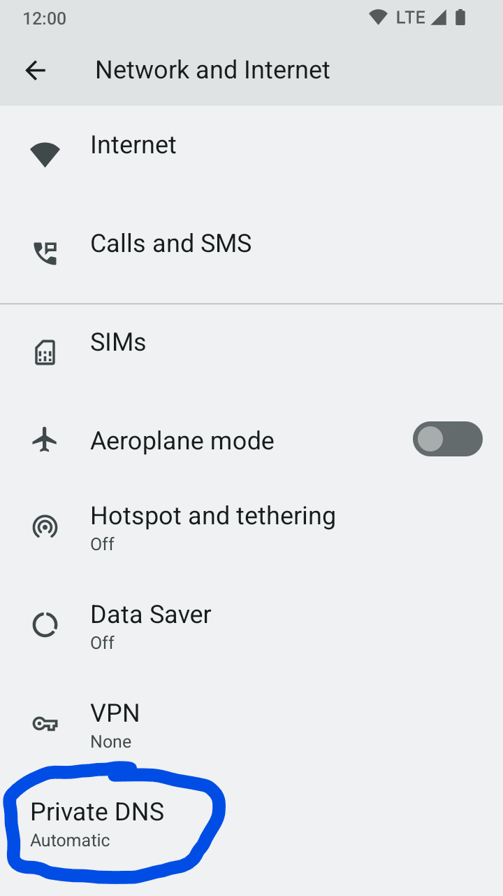You need to click on "Advanced", this will provide you with a "Private DNS" option, you need to click on "Private DNS".

You need to enter your unique NextDNS private address in the "Enter hostname of DNS provider box" and press save.
You have successfully installed NextDNS on your Android device, to remove NextDNS simply set the "Private DNS" back to off or automatic, this will automatically remove NextDNS from your Android device.
Installing NextDNS on iOS and iPadOS
To install NextDNS on your Apple iPhone or iPad, you must be running iOS 14 or newer, you will also need to visit the NextDNS website using Safari and sign in with the account that you previously created.
The appearance of this guide might not reflect your actual device as older and newer versions of iOS differ slightly in appearance and the layout is slightly different on iPadOS devices.
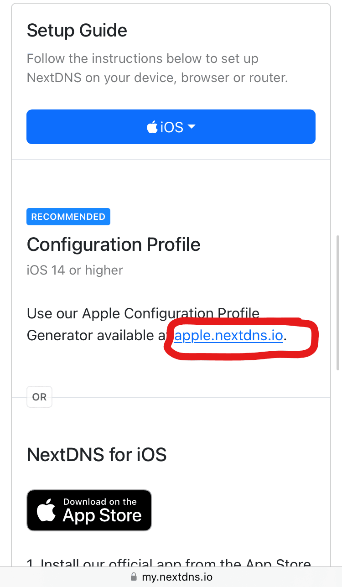Once you have signed in to your NextDNS account on your iOS/ iPadOS device, you should see a screen that looks like this, you need to click on the link featured in the "Configuration Profile" section.
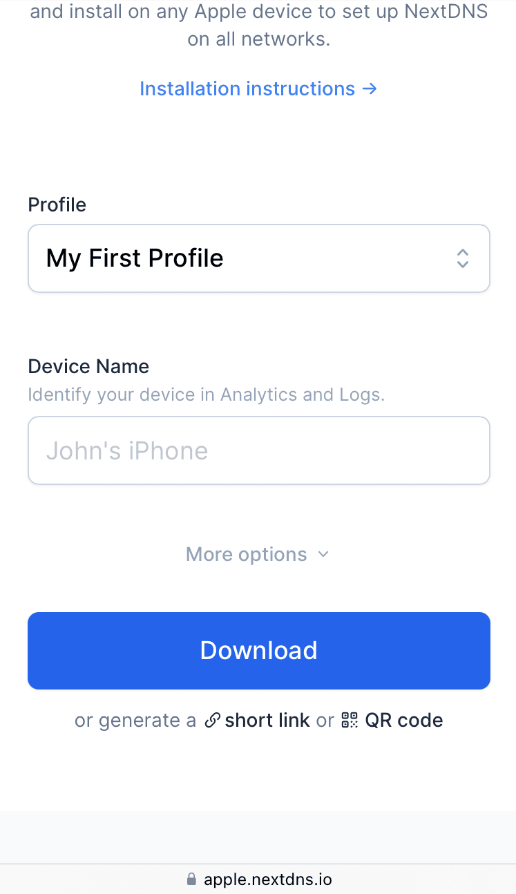You now need to download the configuration profile onto your iOS/ iPadOS device, you just need to scroll down and click on the "Download" button.
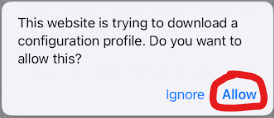You might be asked if you want to download the configuration profile, if you are you need to click "Allow".
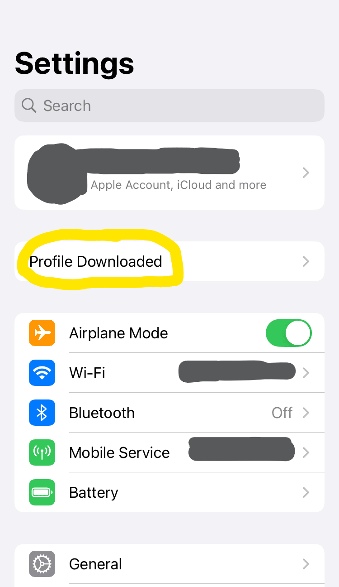You now need to open your system settings and click on "Profile Downloaded".
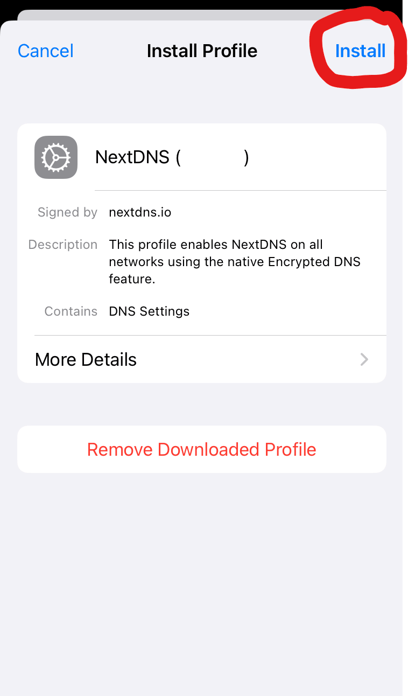You should now be asked if you want to install the configuration profile, you need to click "Install" to install the configuration profile.

You might see this warning, this is because NextDNS will be able to filter and monitor your internet activities, you need to click "Install" to continue.
You have now successfully installed the NextDNS configuration profile on your iOS/ iPadOS device, to remove NextDNS from your device you need to remove the NextDNS configuration profile from your device.
Whitelisting domains and fixing errors
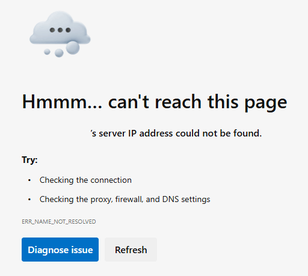You might find that some webpages are no longer working once you have installed and activated the NextDNS service on your device, you might see errors such as the one displayed above, to resolve this issue you will need to whitelist the domain so that it is not incorrectly blocked.
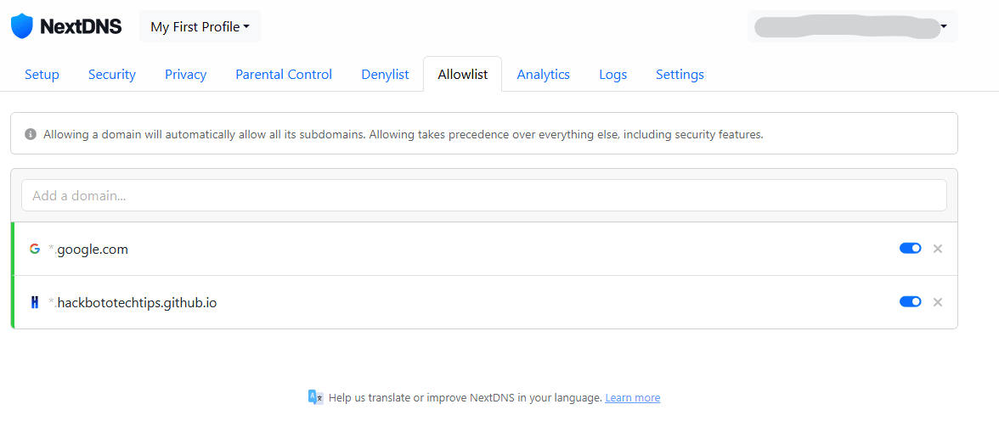To allow a particular domain you need to open the whitelist/ allowlist page in your NextDNS portal, you then need to enter the domain into the "Add a domain" text box.
You can find the domain you need to whitelist in the URL bar, for example the URL of this webpage is "https://hackbototechtips.github.io/mobile_tips/dns_adblocker.html", meaning that the domain you would need to unblock would be "hackbototechtips.github.io"
Page Updated: 26/06/2024
Page Author: Hackboto